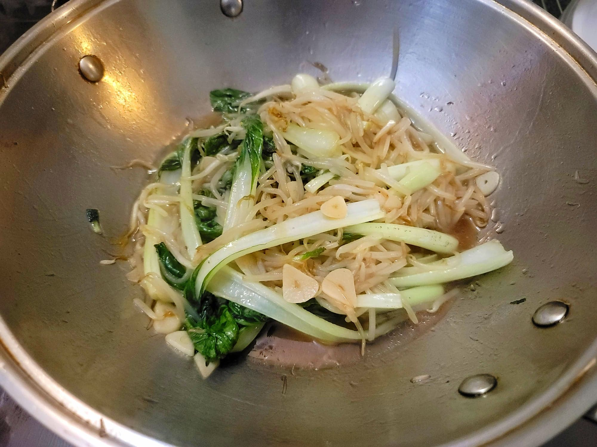

Ru Yi Cai ("As You Wish" Vegetables)

Ingredients:
- 10 oz Tatsoi or substitute Shanghai bok choy, leaves separated
- 3-4 tbsp Canola oil
- 4 cloves Garlic
- 8 oz Soybean sprouts
- 1 tbsp Oyster sauce
- 1/2 tsp Sugar
- 1/2 tsp Sesame oil
- 1/2 tsp White pepper
- 1/4 tsp Salt, or to taste
Instructions:
- Heat the oil in a wok over high heat. Add in the garlic and stir-fry for about 30 seconds. Then add in the soybean sprouts and stir-fry another 30 seconds.
- Add in the tatsoi and stir-fry for about 1 minute. Then add in the rest of the ingredients and stir-fry for another 1-2 minutes or until the tatsoi has wilted to preference. Serve immediately.